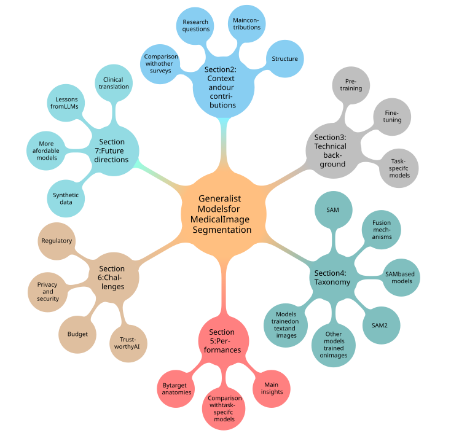

Generalist Models in Medical Image Segmentation:
A Survey and Performance Comparison with Task-Specific Approaches
Andrea Moglia1✦
,
Matteo Leccardi1✦
,
Matteo Cavicchioli1
,
Alice Maccarini2
,
Marco Marcon1
,
Luca Mainardi1
,
Pietro Cerveri1,2
,
1: Politecnico di Milano, 2: Università di Pavia
✦: Equally contributing authors
For correspondence: andrea.moglia@polimi.it

Abstract
Following the successful paradigm shift of large language models, leveraging pre-training on a massive corpus of data and fine-tuning on different downstream tasks, generalist models have made their foray into computer vision. The introduction of Segment Anything Model (SAM) set a milestone on segmentation of natural images, inspiring the design of a multitude of architectures for medical image segmentation. In this survey we offer a comprehensive and in-depth investigation on generalist models for medical image segmentation. We start with an introduction on the fundamentals concepts underpinning their development. Then, we provide a taxonomy on the different declinations of SAM in terms of zero-shot, few-shot, fine-tuning, adapters, on the recent SAM 2, on other innovative models trained on images alone, and others trained on both text and images. We thoroughly analyze their performances at the level of both primary research and best-in-literature, followed by a rigorous comparison with the state-of-the-art task-specific models. We emphasize the need to address challenges in terms of compliance with regulatory frameworks, privacy and security laws, budget, and trustworthy artificial intelligence (AI). Finally, we share our perspective on future directions concerning synthetic data, early fusion, lessons learnt from generalist models in natural language processing, agentic AI and physical AI, and clinical translation.